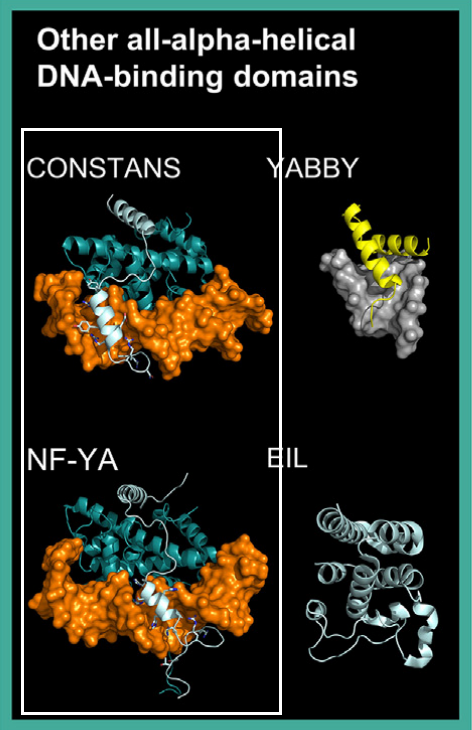

Other all-alpha-helical DBDs
Class: Heteromeric CCAAT-binding factors
Heteromeric CCAAT-binding factors, also known as Nuclear Factor Y (NF-Y), are conserved across eukaryotes, including plants.
These factors bind DNA as trimers composed of NF-YB, NF-YC, and either NF-YA or the plant-specific CONSTANS (CO) protein.
-
NF-YB and NF-YC form a dimer that binds DNA in a non-sequence-specific manner, acting as a scaffold.
-
NF-YA or CO provides sequence specificity by interacting with the NF-YB/C dimer and the DNA minor groove.
-
Structural studies of NF-YA6 (PDB: 6R2V) and CO (PDB: 7CVQ) in complex with NF-YB/C and DNA reveal a long helix interacting with
the NF-YB/C dimer and a short helix entering the DNA minor groove
[src]
[src].
Despite not recognizing a CCAAT motif, CO is classified within this family due to its structural and functional similarities with NF-YA.
